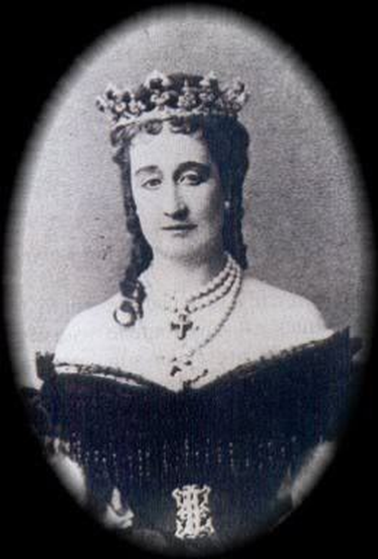

에필로그 - 나폴레옹 3세의 망명
게시: 2016-12-18T23:57:05+09:00
나폴레옹 3세가 된 루이 나폴레옹의 최후는 1871년 보불전쟁, 즉 프로이센과 프랑스 간의 전쟁으로 시작됩니다.
(보불전쟁의 여러 광경입니다. 전쟁은 입으로 하는 것이 아니고, 열정이나 애국심으로 하는 것도 아니며, 바로 여러분과 여러분의 아들들의 목숨, 그리고 여러분 가족들의 눈물로 하는 것입니다. 전쟁에 찬성할 자격이 있는 분들은 그런 것들을 기꺼이 바칠 용자들 뿐입니다.)
전투가 시작되기도 전에 이미 전쟁의 승패는 결정된 것이나 다름없었습니다. 프랑스군의 사기는 높았으나, 바로 4년 전인 1866년 보오전쟁, 즉 오스트리아와의 전쟁을 통해 경험을 쌓은 프로이센군과는 병력 동원 자체가 달랐습니다. 프랑스군은 독일과의 국경 지역 약 250km에 걸쳐 약 20만명을 동원하는데에도 난리법석을 떨어야 했습니다. 프랑스 참모부의 엉성한 계획 때문에 국경 지대의 모든 도로와 철도가 교통 체증으로 마비 상태에 빠진 것입니다. 그에 비해 프로이센군은 좀더 밀집한 120km 전선에 52만명의 병력을 매우 효율적으로 집결시킬 수 있었습니다. 게다가, 독일에게는 신무기였던 크룹(Krupp)사의 8cm 야전포가 있었습니다. 강철제 후장식 야포였던 Krupp C64 포는 프랑스 포병대보다 훨씬 더 정확하고 빠른 포격으로 프랑스군의 밀집 보병 대오를 장난감 병정처럼 쓰러뜨렸습니다.
(1870년, 소집에 응하는 프랑스 예비군들의 모습입니다.)
(Krupp사의 후장식(breech-loading) 8cm 포입니다. 이건 루마니아군에서 사용하던 것인데, 당시 프랑스군은 아직 전장식(muzzle-loading) 포를 썼습니다.)
거기에다 무능하기 짝이 없는 나폴레옹 3세가 총지휘관으로 있었으니, 뭐든 제대로 되지 않았습니다. 보불 전쟁 중 가장 큰 전투였던 8월 17일의 그라블로트(Gravelotte) 전투에서, 11만 병력의 프랑스군은 19만의 프로이센군을 상대로 분전하여 1만2천의 사상자를 내면서도 프로이센군에게 1만9천의 피해를 입혔으나, 결국 메츠(Metz)에 포위되면서 사실상 전쟁의 향방을 패배로 굳히게 됩니다. 이런 상황에서 나폴레옹 3세는 그야말로 아무 결정을 내리지 못하는 처지였습니다. 당시 프랑스군의 총사령관은 본인이었으나, 실제로는 메츠에 포위된 바젠(François Achille Bazaine) 원수, 자신과 함께 있던 막마옹 (Patrice de MacMahon) 원수, 총리였던 팔리카오(Cousin-Montauban, Comte de Palikao) 백작, 그리고 파리에서 섭정으로 있던 황후 외제니(Eugénie)의 4인이 제각각 다른 생각을 가지고 다른 결정을 내리고 있었습니다. 나폴레옹 3세는 스스로의 의견은 아무 것도 없이, 그저 서로 다른 의견을 가지고 있던 이 네 사람의 의견에 이리저리 휘둘릴 뿐이었습니다.
(그라블로트(Gravelotte) 전투에서 돌격하는 프로이센 제9 라이플 대대의 돌격 장면입니다. 이 전투에서는 프로이센군의 피해가 더 컸습니다.)
이런 그의 무능력이 절정에 달했던 것은 그와 막마옹 원수가 9월 1일 세당(Sedan)에서 대책없이 포위되어 프로이센군이 고지에 설치해놓은 포대로부터 맹렬하고 무자비한 포격을 받고 있을 때였습니다. 당시 상황은 막마옹 원수조차 프로이센 포탄 파편에 부상을 당할 정도로 급박했는데, 나폴레옹 3세는 마치 넋이 나간 것처럼 포탄이 쏟아지는 프랑스군 진지 내를 정처없이 걸어다닐 뿐이었습니다. 그의 의미없는 산책을 따라다니던 수행 장교 중 하나는 포격에 전사하고, 둘은 부상을 입을 정도였습니다. 그 날 그를 따라다니던 군의관 하나는 이렇게 적었습니다.
"이 인간이 여기에 자살하러 온 것이 아니라면 대체 뭘 하러 온 것인지 알 수가 없다. 오전 내내 어떤 명령도 내린 것이 없다."
결국 나폴레옹 3세도 결정을 내리긴 내렸습니다. 오후 1시가 되어, 프로이센군에게 백기를 들고 항복한 것입니다. 2일 뒤인 9월 3일, 이 항복 소식이 파리에 전해지자, 파리 시민들의 분노는 폭발했습니다. 황후 외제니가 남아 있는 튈르리(Tuileries) 궁 앞으로 성난 군중이 밀려든 것입니다. 궁 직원들이 성난 군중을 피해 하나둘씩 도주하는 사이, 황후 외제니도 이런 말을 남기고 몰래 뒷문을 통해 영국으로 달아나야 했습니다. 황제가 잡혀 가고 황후가 달아난 파리에서는 시민들이 공화국을 선포했습니다.
"항복이라고 ? 그럴리가 없어 ! 황제는 항복같은 거 하는 거 아니야 ! 황제는 죽었어 ! 사람들이 내게 그 사실을 숨기려 드는 거겠지. 왜 그 양반은 자살을 하지 않은 거지 ? 이게 무슨 망신인지 그 양반은 모르는 건가 ?"
(외제니 황후입니다. 스페인 그라나다 출신이었던 이 귀부인이 상당히 미인이라고 느껴지시나요 ?)

(화가의 붓끝은 정무적 판단을 할 수 있지만, 사진기는 눈치가 없어 그렇지 못합니다. 예, 저 그림 속 외제니가 이 사진 속 외제니와 동일 인물입니다.)
나폴레옹 3세는 굴욕적인 항복 후, 다음 해인 1871년 3월 19일까지 독일 빌헬름쇠허(Wilhelmshöhe) 궁에서 편안한 포로 생활을 하며 어떻게든 전쟁 이후 권좌에 복귀하려는 계략을 획책했습니다. 그가 프로이센 재상인 비스마르크(Bismarck)와 비밀 회담을 해가며 꾸민 계획을 한줄로 요약하면, 프로이센군이 파리의 혁명 공화국 정부를 무찔러 주면 나폴레옹 3세의 부하들이 나폴레옹 3세의 아들을 새 군주로 하여, 프로이센에게 고분고분한 보수 정권을 세우겠다는 것이었습니다. 그러나 파리의 완강한 저항과 독일이 프랑스를 실질적으로 지배하는 것에 대한 영국 및 러시아의 반감으로 인해 그 계획은 실천되지 못했습니다.
(나폴레옹 3세가 범털 포로 생활을 했던 독일 카셀의 빌헬름쇠허(Wilhelmshöhe)입니다.)
파리 공화국 정부가 프로이센과 휴전 협약을 맺은 이후에도 나폴레옹 3세는 어떻게든 권력을 되찾기 위해 온갖 노력을 했습니다. 그러나 제3 공화국 최초의 국회의원 선거에서 보나파르트파는 불과 5석을 얻는 참패를 겪으면서 그의 모든 꿈은 사라졌습니다. 종전이 되면서 비스마르크는 나폴레옹 3세를 그의 호화로운 감옥 아닌 감옥으로부터 석방했고, 갈 곳이 없던 그는 젊은 시절 망명 생활을 했던 영국으로의 망명길을 택했습니다. 파리에 남겨둔 그의 자산 대부분은 몰수된 이후였으므로, 그는 금전적으로 궁색했습니다. 나폴레옹 3세는 휴대하고 있던 보석류를 팔아 망명 자금을 마련했다고 합니다.
영국에서 그는 런던에서 기차로 약 30분 정도 떨어진 치즐허스트(Chislehurs)라는 마을의 3층짜리 저택에 정착했는데, 빅토리아 여왕의 방문을 받는 등 나름 예우를 받으며 살았습니다. 그는 여기서 별로 가치없는 글을 쓰거나 에너지 효율이 좋은 난로를 개발하며 시간을 보냈는데, 바로 다음해인 1872년부터 건강이 악화되었습니다. 그는 결국 1873년 1월 병사했는데. 그의 마지막 말은 "우리가 세당에서 겁장이는 아니었다는 거 사실이쟎아 ?"라는 것이었다고 합니다. 그는 최후의 순간에도 자신이 저지른 죄악과 프랑스 국민에게 끼친 피해보다는, 아무도 신경쓰지 않을 그의 개인적 명예가 더 중요했던 모양입니다.
(담석 제거 수술 후 건강이 악화되어 결국 사망한 희대의 코미디언 루이 나폴레옹의 죽음입니다.)
이것이 1848년 2월 혁명으로 피를 흘려가며 기껏 루이 필립 왕을 내쫓은 뒤 가진 대통령 선거에서, '위대하신 나폴레옹의 조카라는데 뭘 묻고 따지고 그러냐'라며 멍청한 루이 나폴레옹을 대통령으로 뽑았던 프랑스인들이 받아들여야 했던 결과였습니다. 역사는 자꾸 반복됩니다. 2번이면 이미 충분히 당한 것 같습니다. 다시는 반복되지 않았으면 합니다.